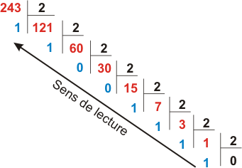

Représentation d'un entier positif dans différentes bases
Hormis la base 10, deux bases sont utilisées en informatique :
- la base 2 (le système binaire)
- la base 16 (le système hexadécimal)
Dans toute la suite, la base dans laquelle le nombre est écrit sera précisée en indice.
Exemple : \(13_{10}=1101_2=\rm{D}_{16}\)
I. Le système binaire
En base 2, on ne dispose que des chiffres 0 et 1. Le système binaire est un système de numération de position (comme le système décimal, hexadécimal... mais pas comme le système romain). À chaque rang correspond une puissance de 2.
Du binaire vers le décimal
| ... | 128 | 64 | 32 | 16 | 8 | 4 | 2 | 1 |
|---|---|---|---|---|---|---|---|---|
| ... | \(2^7\) | \(2^6\) | \(2^5\) | \(2^4\) | \(2^3\) | \(2^2\) | \(2^1\) | \(2^0\) |
| ... | 1 | 1 | 0 | 1 | 0 | 0 | 1 | 0 |
\(11010010_2=1 \times 2^7+ 1 \times 2^6+0 \times 2^5+1 \times 2^4+0 \times 2^3+0 \times 2^2+1 \times 2^1+0 \times 2^0\)
\(=128+64+32+2\)
\(=210_{10}\)
Le nombre binaire 11010010 correspond donc au nombre décimal 210.
En python
En Python, on peut utiliser la fonction int("nombre",base).
int("11010010",2)
# Sortie: 210
Du décimal vers le binaire
Principe : dans chaque nombre décimal, il existe une plus grande puissance de 2 qui est inférieure au nombre.
Par exemple, dans 243, il y a 128. Donc
\(243=128 + (115)\)
\(243=128+64+(51)\)
\(243=128+64+32+(19)\)
\(243=128+64+32+16+(3)\)
\(243=128+64+32+16+2+1\)
\(243=1 \times 2^7+ 1 \times 2^6+1 \times 2^5+1 \times 2^4+0 \times 2^3+0 \times 2^2+1 \times 2^1+1 \times 2^0\)
Donc \(243_{10}=11110011_2\)
méthode des divisions successives

En python
En Python, on peut utiliser la fonction bin(nombre). Elle renvoie une chaîne de caractère où le nombre binaire est précédé de '0b'.
bin(243)
# '0b11110011'
Exercice
Quelle est la valeur maximale d'un octet (un octet = 8 chiffres binaires) ?
\(11111111_2=255\). On retrouve ce nombre comme étant la valeur maximale d'une composante de couleur dans le codage RGB, ce qui signifie que chaque composante est codée sur un octet.
II. Le système hexadécimal
L'inconvénient essentiel du système binaire est la longueur de l'écriture des nombres qu'il génère. Pour cette raison, le système hexadécimal, ou système de base 16 est très souvent employé.
-
Pour écrire en base 2, il faut 2 chiffres différents : le 0 et le 1.
-
Pour écrire en base 10, il faut 10 chiffres différents: 0,1,2,3,4,5,6,7,8,9.
-
Pour écrire en base 16, il faut donc 16 chiffres différents : 0,1,2,3,4,5,6,7,8,9,A,B,C,D,E,F.
On a donc la correspondance :
A représente 10
B représente 11
C représente 12
D représente 13
E représente 14
F représente 15
De l'hexadécimal vers le décimal
| 256 | 16 | 1 |
|---|---|---|
| \(16^2\) | \(16^1\) | \(16^0\) |
| 1 | D | 2 |
\(\rm{1D2}_{16}=1 \times 16^2+ 13 \times 16^1+2 \times 16^0=256+208+2=466_{10}\)
Le nombre hexadécimal 1D2 correspond donc au nombre décimal 466.
En pratique, l'hexadécimal est surtout utilisé pour sa capacité à représenter la valeur de n'importe quel octet sur 2 chiffres ("chiffres" étant à prendre au sens large = chiffres ou lettres !).
Exercice
- Donner la valeur des octets
FF,3A,B2. - Expliquer pourquoi la couleur RGB (138,255,51) a pour code html
#8AFF33. - Quelle est la couleur html du blanc ?
-
FF=255 ; 3A=58 ; B2=178
-
138 a pour code hexa 8A, 255 a pour code hexa 255, 51 a pour code hexa 33
-
#FFFFFF